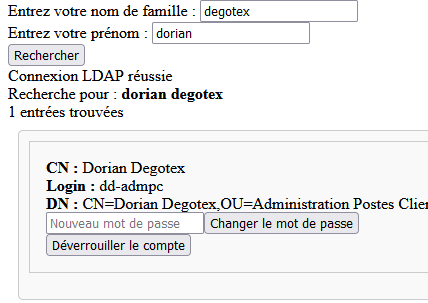
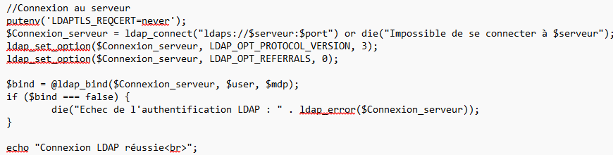
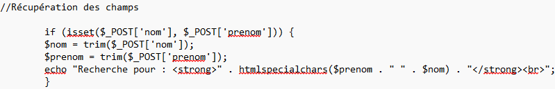
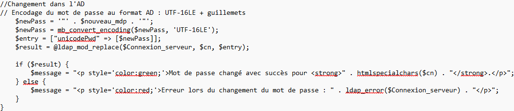
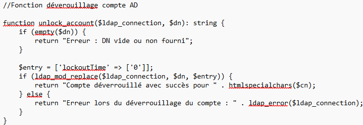

Lors de mon stage de première année de BTS SIO, il m'était demandé de réaliser une page PHP pour dévérouiller des comptes et changer leurs mots de passe depuis un téléphone
Le but de ce projet est que les membres du SI puissent déverrouiler les comptes lorsqu'ils sont en astreinte sans avoir à se connecter en VPN au réseau de l'entreprise
Je ne me suis occupé que de la création de la page, mais pas de la création du serveur web

Connexion à l'AD

Je récupère ensuite les champs entrés

Changements MDP

Déverouillage des comptes

Retour